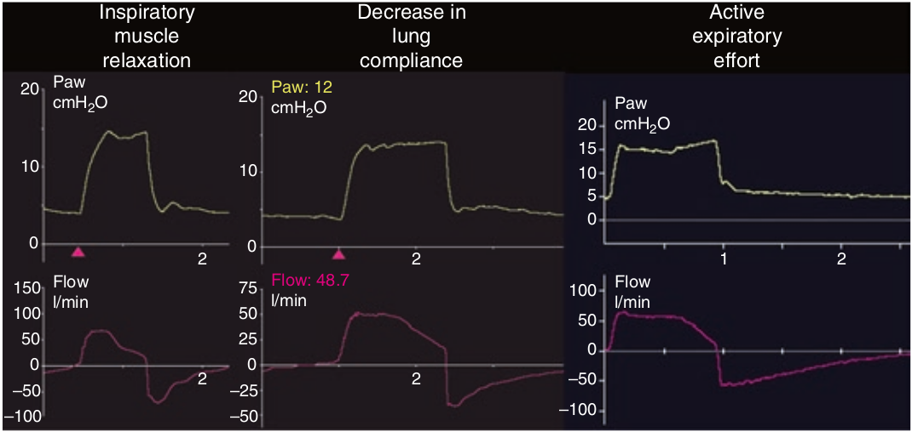

شیب افت نمائی شدت جریان ممکن است در اثر تغییر کمپلیانس و یا تلاش بیمار تغییر پیدا کند. چنانچه شیب منحنی صاف گردد (افقی شود)، دلالت بر توقف تلاش دمی بیمار دارد. برعکس اگر شیب شدت جریان تندتر شود، علامت کاهش کمپلیانس (شروع اتساع مفرط) و یا شروع تلاش بازدمی می باشد.

در مورد منحنی شدت جریان در هنگام هواگیری ریه ها کدام مورد غلط است؟
۱ - شدت جریان در حالت طبیعی افت نمائی دارد
۲ - در صورت وقوع اتساع مفرط شیب منحنی تغییر می کند
۳ - شدت جریان ممکن است خطی باشد
۴ - شیب شدت جریان بستگی به ثابت زمانی دمی دارد
۵ - در صورت بازدم فعال شیب منحنی تغییر می کند